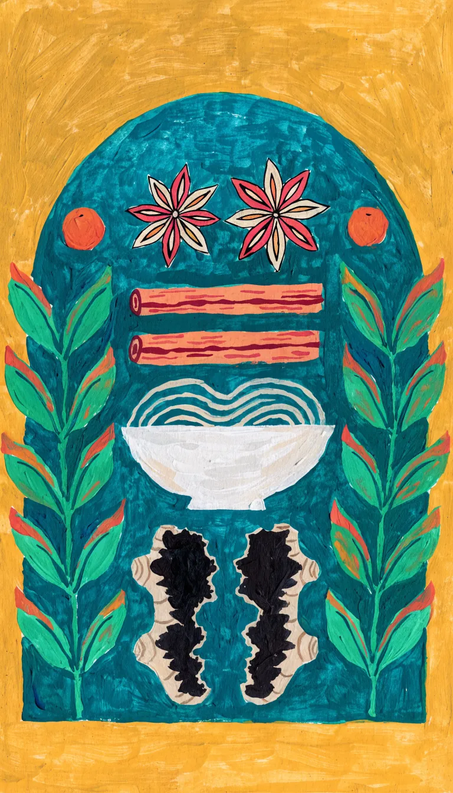
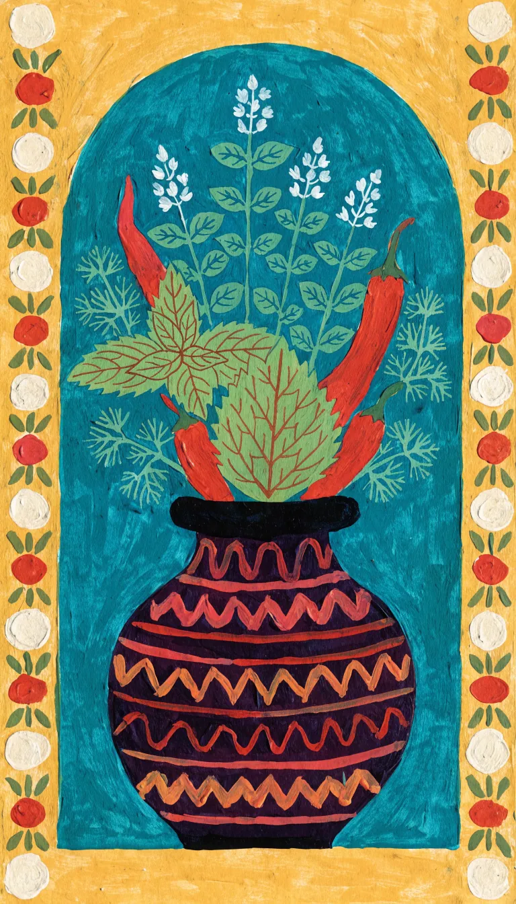
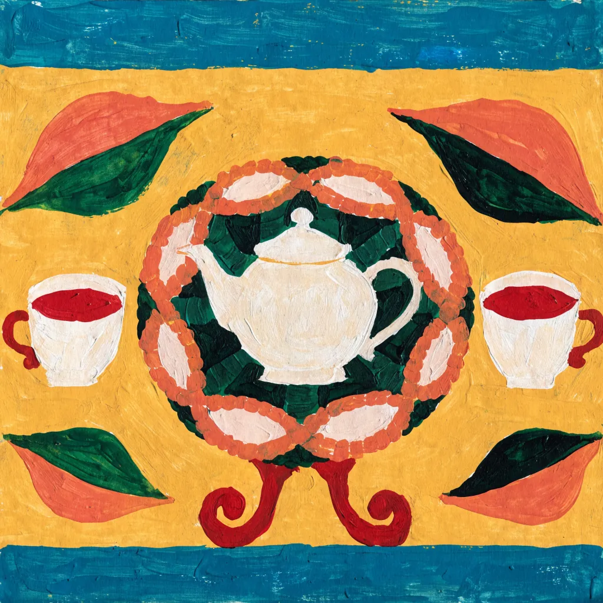

Vietnamesisches Restaurant · Dillstraße 16, Eimsbüttel · die Stufen runter zur gelben Tür
Mo–Fr 12–15 und 17–22 Uhr
 Foto: Sylvia Senger · Google Maps
Foto: Sylvia Senger · Google Maps
Nhỏ heißt klein. Der Raum ist es nicht, er ist gelb.
Vietnamesische Küche im Souterrain der Dillstraße: Phở und Bún, Gerichte aus Wok und Pfanne, mittags der Mittagstisch. Sie essen bei uns, nehmen mit oder reservieren vorher einen Tisch.
Die sechs Buchstaben an der Wand hängen auf geflochtenen Tabletts. Die Wortmarke oben hat sie sich abgeschaut.
 Foto: Jingwen Yang · Google Maps
Foto: Jingwen Yang · Google Maps
 Foto: Deniz Adie · Google Maps
Foto: Deniz Adie · Google Maps
Aus der Karte
Ein Auszug. Die vollständige Karte mit allen Preisen liegt vor Ort aus.
Suppen & Bún
- Phở mit RindfleischReisnudeln in Rinderbrühe, Thai-Basilikum, Frühlingszwiebeln
- Bún mit gebratenem RindfleischReisnudeln, Salat, Erdnüsse, Rindfleisch aus der Pfanne
Aus Wok und Pfanne
- Knusprige EnteEnte mit krosser Haut
- Gebratene SchweinerippchenRippchen aus der Pfanne
- Exotische GarnelenpfanneGarnelen, im Wok gebraten
- Gebratene Nudeln mit HühnchenNudeln und Hühnerfleisch aus dem Wok
- Geschmortes aus dem Tontopfim Topf serviert, mit Frühlingszwiebeln und Röstzwiebeln
Zum Anfang
- Gedämpfte WantansTeigtaschen, gedämpft
- Mittagstisch Mo–Fr 12–15 Uhr
- Vegetarisch: Gerichte ohne Fleisch stehen auf der Karte.
- Zum Mitnehmen: anrufen, bestellen, abholen.
- Dazu: Kaffee, Desserts, Bier und Wein.


Öffnungszeiten
Mittags bis 15 Uhr gibt es den Mittagstisch, abends ab 17 Uhr wieder. Samstag öffnen wir um 14:30, Sonntag durchgehend von 12 bis 22 Uhr.
Tisch reservieren: 040 68919156- Montag12–15 · 17–22
- Dienstag12–15 · 17–22
- Mittwoch12–15 · 17–22
- Donnerstag12–15 · 17–22
- Freitag12–15 · 17–22
- Samstag14:30–22
- Sonntag12–22
 Foto: Hauke Kortum · Google Maps
Foto: Hauke Kortum · Google Maps
Der Raum
Senfgelbe Wände, Bambusstühle, Leuchten aus Bambusrohr mit roten Enden. An den Wänden gemalte Vasen auf Petrol in weißen Rahmen, und über allem die sechs Buchstaben.

KI-Bild
KI-BildDer Weg
Dillstraße 1620146 Hamburg-Eimsbüttel
Halbrund die Stufen hinunter, zwischen den zwei Kugellampen durch die gelbe Tür – dann sind Sie drin.
Route in Google MapsTisch reservieren oder zum Mitnehmen bestellen
Anrufen, Gericht nennen, abholen. Einen Tisch reservieren Sie genauso.
040 68919156 Dillstraße 16, 20146 Hamburg-Eimsbüttel Route planen
KI-Bild